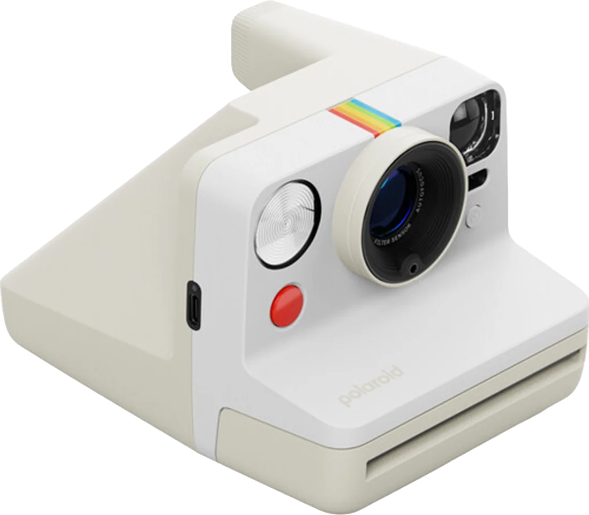

Polaroid Camera

Timeline
— The first Polaroid Land Camera, the Model 95, went on sale in Boston, delivering a finished print in about a minute.
— The SX-70 introduced integral film: the photo ejects from the camera and develops in your hand.
— Polaroid stopped producing instant film; a small group later called The Impossible Project took over the last factory to keep it alive.
— Polaroid launched the Polaroid Now, and instant photos became a fixture of parties, dorm walls, and photo strips again.
The instant camera was developed by Edwin Land, whose company Polaroid turned photography into something that happened on the spot. Instead of waiting for film to be developed, people watched an image slowly appear on a white-framed square of paper.
Digital cameras like the CCD camera made instant film seem slow and expensive, and by the 2000s Polaroid was nearly gone. Today that slowness is the point: every print is a single physical object that can't be retaken, filtered, or deleted. Like vinyl records and cassette tapes, the Polaroid survived by becoming a deliberate choice rather than a default.